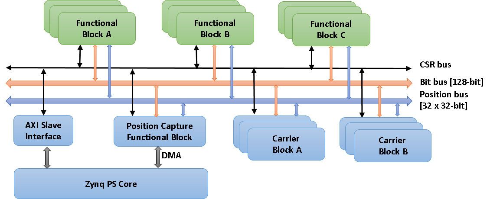

What can PandABlocks do?#
PandABlocks is a framework enabling a number of functional Block instances to be written and loaded to an FPGA, with their parameters (including their connections to other Blocks) changed at runtime. It allows flexible triggering and processing systems to be created, by users who are unfamiliar with writing FPGA firmware.

How the documentation is structured#
Documentation is split into three categories, also accessible from links in the top bar.
Available Blocks
- Available Blocks
- BITS - Soft inputs and constant bits
- CALC - Position Calc
- CLOCK - Configurable clock
- COUNTER - Up/Down pulse counter
- DIV - Pulse divider
- FILTER - Filter
- FMC_24V - FMC 24V IO Module
- FMC_ACQ427 - FMC ACQ427 Module
- FMC_ACQ430 - FMC ACQ430 Module
- FMC_LOOPBACK - FMC Loopback Module
- INENC - Input encoder
- LUT - 5 Input lookup table
- LVDSIN - LVDS Input
- LVDSOUT - LVDS Output
- OUTENC - Output encoder
- PCAP - Position Capture
- PCOMP - Position Compare
- PGEN - Position Generator
- POSENC - Quadrature and step/direction encoder
- PULSE - One-shot pulse delay and stretch
- QDEC - Quadrature Decoder
- SEQ - Sequencer
- SFP_DLS_EVENTR - SFP Event Receiver Module
- SFP_LOOPBACK- SFP Loopback Module
- SFP_PANDA_SYNC - Synchronize data between 2 PandAs
- SFP_UDPONTRIG - SFP UDP on trig Module
- SRGATE - Set Reset Gate
- SYSTEM - System control FPGA
- TTLIN - TTL Input
- TTLOUT - TTL Output